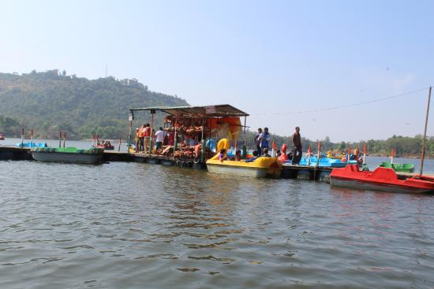
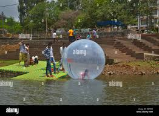
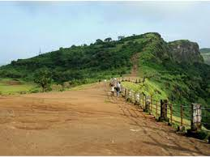
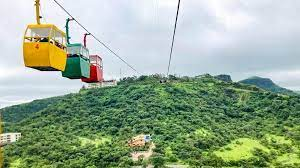
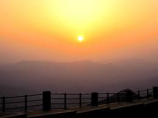
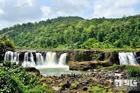
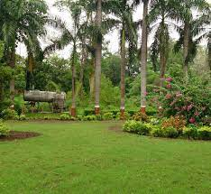
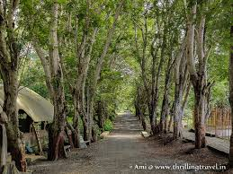

The Hill Station is also known as 'Gujarat ki Aankhon ka Tara.'. It is at the height of the 1000m above the sea level. However, it is located at the borders of the Gujarat and its neighbouring state Maharastra. It is situated in the 'Dang' district. Also, spreaded upto the 3,151 sq/km. This hill station has many things to do such as it has boating done at its lake. Moreover, there are markets. Also, many other places such as museum, points, ropeway, temple and many other places for activites. This Hill Station has the elevation of the 3000 ft which makes it way cooler than the normal level. This place gets an different kind of shine when the monsoon arrives. As the arrival of monsoon gives Saputara huge amount of lush greenary. Furthermore, the way to Saputara have many watefalls and the flow of the water of these waterfalls gets accelarated in the rainy season. There are many capativating places here lets have a look into them.
Capitivating Places of Saputara
- Saputara Lake
- Table Top / Table Point
- Pushpak Ropeway
- Sunrise Point
- Gira Waterfall
- Waghai Botanical Garden
1.) Saputara Lake
This is one of the most enjoyable place in the Saputara. This lake has the boating facilities. The boats includes all the facilites such as pedal boating as well as the row boating. For the kids or the children under the age of the 8 years there is bicycle facility provided. However, it should be kept in mind that this is the most crowded place in the Saputara and more care should be taken while going around. Moreover, the beauty of this lake is seen when the lake is covered in the clouds in the monsoon.
 
2.) Table Top / Table Point
This place which is called Table Point it is also known as the Table Top. The reason behind this name is because this place is located at the very top of the
Hill Station. Here you can visit this place by even walking as well as via car or vehicle but reaching this place there is a elevation of the road which is too much
and is too difficult for the cars to climb as well as while walking too. But after reaching this spot the beauty of whole Saputara can be glanced. Here you can have many
activities such as camel riding, bike driving, bicycling etc. Moreover, you can also go to the other spot using the ropeway. The ropeway is also known as
'Pushapak Ropeway'.

3.) Pushpak Ropeway
This ropeway is located at the 'Table Point'. It is about 3000 feets above the sea level and the most fascinating place in Saputara. This table top connects
to the sunrise point. This ropeway is acutaully beside the table top at the sunset point, so basically, the ropeway connects the sunrise point to the sunset point.
However, this is very much enjoying activity of watching the whole hill station from the top view.

4.) Sunrise Point
This point is on the other side of the Table Top. In the morning when the sun is rising at that time when the sun is watched from this point it will be very eye
capturing beauty of the morning in Saputara.

5.) Gira Waterfall
The Gira Waterfall looks very very beautiful when it is visited during the times of Monsoon as the rain water will make the flow of waterfall more accelarated. The waterfall has streams nearby it. Morever, it has two parts of the waterfall. However, it seems very strange that one side of the waterfall is greater in size while looking for the another side is smaller than the first one. However, this place is fenced by the local police. Here, there are many stalls for having some food such as eating corn, snacks or tea etc. This is also known as Gujarat's largest waterfall.

6.) Waghai Botanical Garden
This botanical garden comes along the way to Saputara. It is spreaded almost around 24 hectres of the land. This garden had many plants and the specific plantation that grows
in the Dang District, it also has the bamboo trees and the plantation of the calti which is a fully a garden. Sometimes, the tourist just comes here for to get entertainment.
However, this place is very interesting for the nature lovers.
 
Therefore, I would like to say that the Saputara Hill Station is a very much wonderful place in Gujarat and it is worth to go for a visit of this place. As this place is
full of enjoyment and with mind refreshing scenery thus it is the best hill station for the tourist.
Hereby, I am also keeping a video and audio description of the Saputara hill station, so that the everyone can also have a virtual tour of it.
Hope you have enjoued reading. And i would like to say that this place is worth of one time visit. However, Saputara is known for it beauty and the greenary.